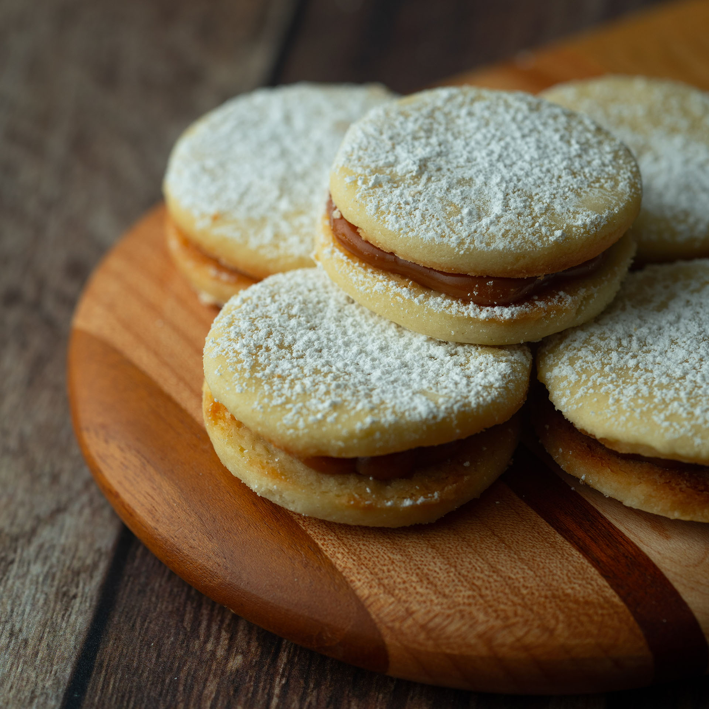
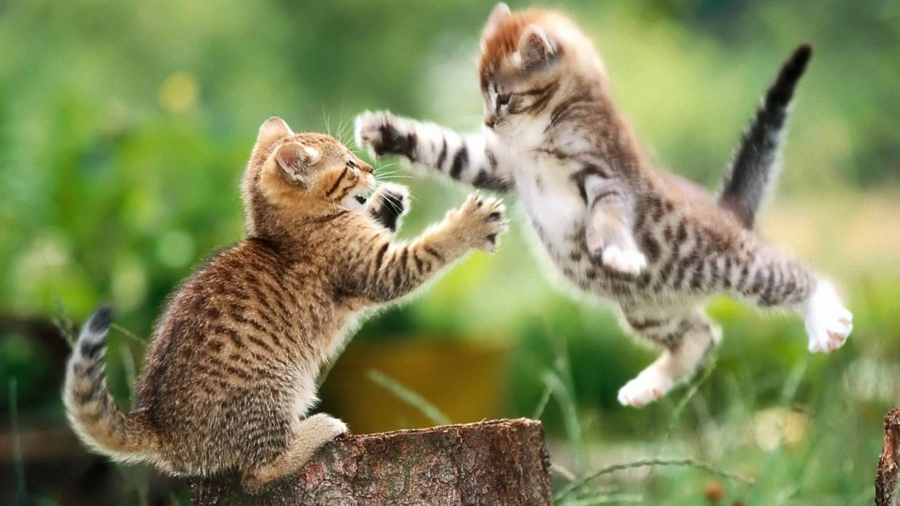

SOY LA TRINI Y ME GUSTA LO DULCE
el chocolate
cosas DULCES
lo bonito de la vida
lo puedes encontrar en tooodos lados
me gustan las cosas dulces, y no me refiero solo a la comida... dulce puede ser la vida, la naturaleza, un abrazo, una mirada, una flor o una gotita de lluvia
un dulce video para comenzar a saborear la vida
que te hacen sentir estas imagen? tal vez hambre, o tal vez te recuerde algun momento compartiendo una rica once en familia
ellos estan jugando? tal vez estan bailando.. solo trato de decirte que la vida es una dulce melodia y se puede vivir e interpretar de distintas formas
(ve a lo que lleva, solo espero que te parezca un poco dulce...)

